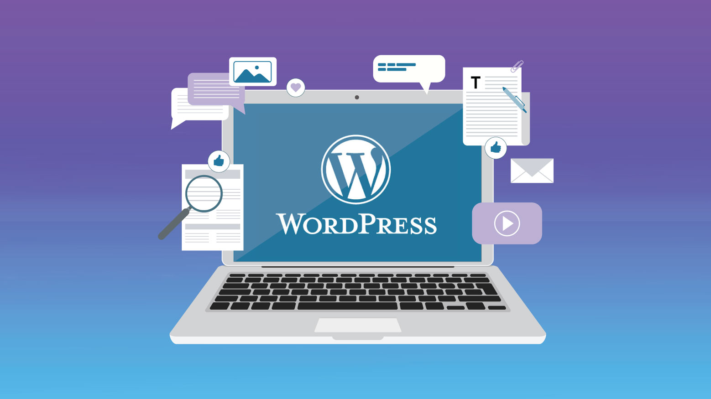

<section id="course-page">

  <div class="container text-muted">

    <div class="row">
      <div class="col-sm-8 col-12">
        <div class="card">
          <h3 class="text-muted">The WordPress Website Business Course</h3>

          <p>
            This is a special course for business professionals. It's aimed at non-coders; those who wish to manage
            their own website without having to hire developers.
          </p>
          <p>
            The course assumes no prior knowlege. You will be taught everything from scratch. All you need is a working computer.
          </p>
          <p>
            At the end of the course, you will be able to use WordPress to build the following:
          </p>
          <ol>
            <li>Business / Personal website</li>
            <li>Magazine Blog</li>
            <li>Photo Gallery</li>
            <li>Online Portfolio</li>
            <li>e-Commerce Store</li>
            <li>Video collection site</li>
            <li>Membership site</li>
            <li>Resume</li>
            <li>and more...</li>
          </ol>

          <p class="topic">Requirements</p>
          <ul>
            <li>We will teach you everything. All you need is a working computer.</li>
            <li>          This course has no prerequisite knowledge. It is completely comprehensive and will take
              you from zero-skills to professional WordPress Web Developer.
            </li>
          </ul>

          <p class="topic">Target Audience</p>
          <ol>
            <li>Those who have no web development knowledge or experience.</li>
            <li>Professionals who love to share their knowlege via blogging and make some money in return.</li>
            <li>Those who wish to sell thier products with an ecommerce store.</li>
          </ol>

          <p class="topic">Course Curriculum</p>
          <ol>
            <li>Installing Wordpress</li>
            <li>Installing A Wordpress Theme</li>
            <li>Customizing Themes and Settings</li>
            <li>Creating Pages and Using Visual Editor</li>
            <li>Creating Navigation Menus</li>
            <li>Setting Up A Slide Show And Featured Pages On The Home Page</li>
            <li>Linking Social Media Pages To Your Site</li>
            <li>Adding Social Media Functionality To Your Pages And Blog Posts</li>
            <li>Using Wordpress Plugins</li>
            <li>Creating A Contact Form</li>
            <li>Setting Up and Organizing A Blog</li>
            <li>Using Widgets and Sidebar Layouts</li>
            <li>Basic Wordpress Settings and More</li>
          </ol>

        </div>
      </div>
      <div class="col-sm-4 col-12">
        <div class="card">
          <div id="panelImage">
            
          </div>
          <p><span class="bold">Duration:</span> 1 week</p>
          <p><span class="bold">Phone: </span> +250790001380, +2348060911051 </p>
          <p><span class="bold">Email: </span>tundeogunjimi@lucentafrica.com</p>
          <p><span class="bold">Fee:</span> USD 200.00</p>
        </div>
      </div>
    </div>

  </div>
</section>
